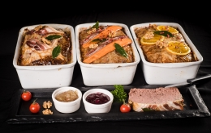
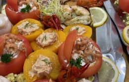

Sinds 1921 · 4 generaties
Zelfgemaakte charcuterie, verse vleesspecialiteiten en persoonlijk advies — elke dag vers, elke dag met passie.
Het verhaal
Slagerij Detremmerie bestaat al 104 jaar en nu met de 4e generatie gaan Kris Plancke en Liselot Detremmerie verder op een nieuwe locatie in Kruisem. Wij staan elke voormiddag op de markt en hebben onze winkel in Kruisem die nu ook in de voormiddag open is.
Wij zijn gespecialiseerd in allerhande zelfgemaakte charcuterie, traiteur, verse vleesspecialiteiten, kaas, huisgemaakte boerenhespen, gerookte bacon, spek en droge worsten. Op vraag krijgt u glutenvrij en lactosevrije hamburgers, cordonbleu en schnitsels.
Wij verwennen u ook graag met uw feesten — bel gerust voor verdere vragen.

Ons aanbod
Rundsvlees, varkensvlees, kalfsvlees, kip en gevogelte — altijd vers en met de beste kwaliteit.
Huisgemaakte boerenhespen, gerookte bacon, spek, droge worsten en meer — volgens traditionele recepten.
Een ruime selectie kazen en traiteurplaten, perfect voor elke gelegenheid.
Wij verwennen u met uw feesten. Bekijk onze feestfolder en bel voor een offerte op maat.
Op vraag bereiden we glutenvrije en lactosevrije hamburgers, cordonbleu en schnitsels.
Bestel eenvoudig online en haal af in onze winkel in Kruisem, of vind ons op een markt bij u in de buurt.
Waar vind je ons
Wij staan 7 dagen per week op verschillende markten in West-Vlaanderen en Gent.
In de winkel (Kruisem): Ma–Wo 8u30–18u33 | Do enkel afhaling | Vr gesloten | Za 7u–18u30 | Zo 7u–12u00
Veelgestelde vragen
Wij staan 7 dagen per week op verschillende markten in West-Vlaanderen en Gent. Daarnaast is onze winkel in Kruisem (Kazerneweg 9) op verschillende momenten open. Bekijk onze marktschema hierboven voor de exacte locaties.
Ja, u kunt eenvoudig online bestellen via onze website. U kunt uw bestelling afhalen in onze winkel in Kruisem.
Op vraag bereiden we glutenvrije en lactosevrije hamburgers, cordonbleu, schnitsels en meer. Neem contact op voor de mogelijkheden.
Zeker! Wij verwennen u graag met uw feesten. Bekijk onze feestfolder en bel gerust voor een offerte op maat.
De winkel in Kruisem is open: maandag tot woensdag 8u30–18u33, donderdag enkel afhalingen, vrijdag gesloten, zaterdag 7u–18u30, zondag 7u–12u00.
Contact
Heeft u vragen over onze producten, bestellingen of feestarrangementen? Neem gerust contact op — wij helpen u graag verder.